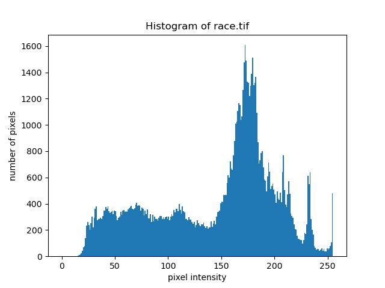
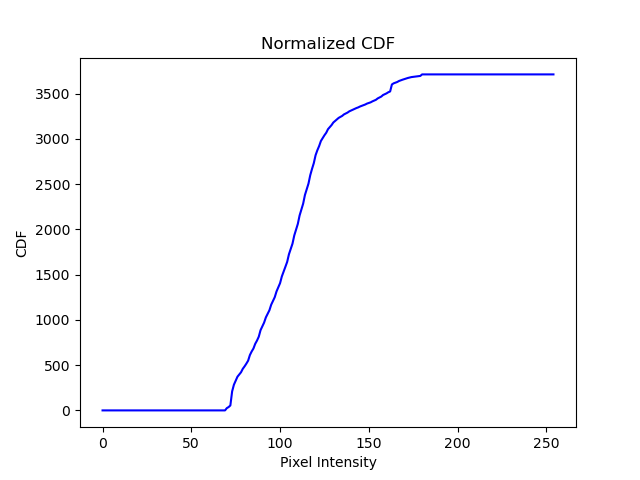
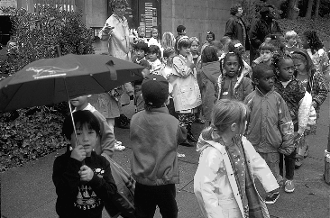
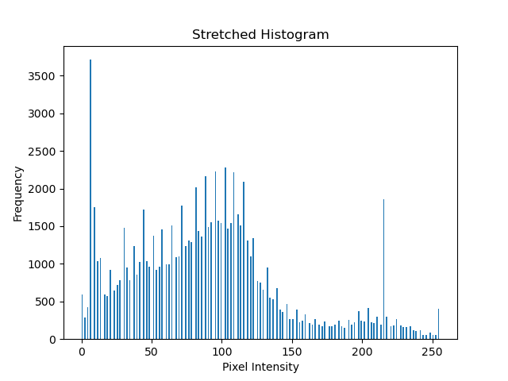
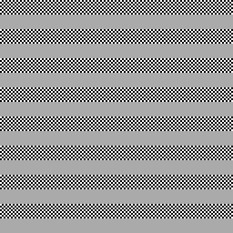

def equalize(x: np.array, path: str):
hist, bins = np.histogram(x.flatten(), bins=np.linspace(0, 255, 256))
cdf = hist.cumsum()
cdf_normalized = cdf * float(hist.max()) / cdf.max()
equalized_hist = np.interp(x, bins[:-1], cdf_normalized)
# Plot the normalized CDF
plt.plot(cdf_normalized)
plt.title('Normalized CDF')
plt.xlabel('Pixel Intensity')
plt.ylabel('CDF')
plt.savefig(Path(path).stem + '_normalized_cdf.png')
plt.close()
# Plot the equalized histogram
plt.hist(equalized_hist.flatten(), bins=256)
plt.title('Equalized Histogram')
plt.xlabel('Pixel Intensity')
plt.ylabel('Frequency')
plt.savefig(Path(path).stem + '_equalized_hist.png')
plt.close()
plt.imsave(Path(path).stem + '_equalized.png', x, cmap='gray')



def stretch(input_image, T1, T2, path: str):
# Ensure input image is of type uint8
input_image = np.asarray(input_image, dtype=np.uint8)
# Create an output array of the same shape as the input image
output_image = np.zeros_like(input_image)
# Apply the contrast stretching transformation
output_image[input_image <= T1] = 0
output_image[input_image >= T2] = 255
output_image[(input_image > T1) & (input_image < T2)] = ((input_image[(input_image > T1) & (input_image < T2)] - T1) / (T2 - T1)) * 255
# Plot the equalized histogram
plt.hist(output_image.flatten(), bins=np.linspace(0, 255, 256))
plt.title('Stretched Histogram')
plt.xlabel('Pixel Intensity')
plt.ylabel('Frequency')
plt.savefig(Path(path).stem + '_stretch_hist.png')
plt.close()
plt.imsave(Path(path).stem + '_stretch.png', output_image, cmap='gray')


The perceived intensity of the checkerboard (
The percieved intensity of the gray level
To find the value of
Substituting, we have:
Solving for
Monitor Gamma = 1.7
Measured Gray Level = 170

Performed correction from